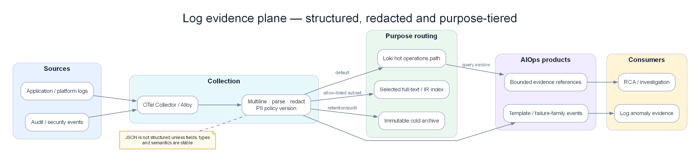

Chapter 04 — Loki¶
Loki is Grafana’s horizontally scalable log aggregation system, designed with the philosophy “logs like metrics”: index only labels, compress log content, and store it on object storage. At large production scale, Loki is far cheaper than ELK while integrating natively with Prometheus and Grafana.

Poster: raw log text becomes evidence only after identity, templating, quality, onset, and trace/change links.
Prerequisites¶
- 01 — Observability — log concepts, cardinality
- 02 — OpenTelemetry — log collection pipeline
- 03 — Prometheus — label model (Loki shares this model)
Related Documents¶
- 02 — OpenTelemetry — Loki exporter in OTel Collector
- 09 — Anomaly Detection — anomaly detection on logs
- 11 — Root Cause Analysis — log data as input to RCA
Next Reading¶
After this chapter, continue to 05 — Tempo.
1. Why Loki?¶
The Core Design Decision¶
Elasticsearch (ELK stack) indexes the entire log content. That enables full-text search on every field but: - Requires very large CPU capacity for indexing - Requires large disk to store the index (often an extra 10–30% of raw log size as index overhead) - Is very expensive to operate at large production scale
Loki chooses a different balance: index only labels, compress log content, and store it.
Elasticsearch: index(all_fields) + store(content) → expensive, flexible
Loki: index(labels_only) + store(compressed_chunks) → cheap, label-based query
When this trade-off is reasonable:
- You mainly query by
service,namespace,level,region— all labels - You rarely need full-text search across millions of different fields
- You want cost efficiency at large scale
- You already use Prometheus — Loki’s label model is the same
When this trade-off is NOT reasonable:
- You need full-text search on unstructured logs
- You need complex aggregations directly on log content
- You need business analytics on logs (use a dedicated data warehouse instead)
2. Loki vs ELK Stack¶
| Dimension | Loki | ELK Stack |
|---|---|---|
| Indexing | Labels only | All fields (inverted index) |
| Query power | Label filter + content filter | Full Lucene query language |
| Storage cost | Low (S3 + compression) | High (hot storage + index) |
| Ingest cost | Low (minimal CPU) | High (CPU for indexing) |
| Search speed | Slower (must scan chunks) | Faster (direct index search) |
| Setup complexity | Medium | High (manage Elasticsearch cluster) |
| Ops burden | Low | High (shards, replicas, JVM config) |
| Grafana integration | Native | Via plugin |
| Prometheus-like labels | ✅ Same label model | ❌ Different model |
| Log-to-trace correlation | ✅ Native integration | ❌ Extra setup required |
| Scalability | Horizontal (S3) | Horizontal (Elasticsearch) |
| License | AGPLv3 | Elastic License (BSL) |
| AWS Managed | None (use Grafana Cloud) | OpenSearch (AWS fork) |
General guidance:
- Teams already on Grafana + Prometheus → Loki (same label model, native integration)
- Teams needing full-text search and complex analytics → Elasticsearch / OpenSearch
- Teams optimizing cost at large scale → Loki (often 10–20× cheaper)
2.1 Dual-path: Loki + OpenSearch/Elasticsearch for AIOps¶
KEY IDEA
Loki and Elasticsearch are both log stores, but they optimize opposite axes: $/GB + label discipline vs full-text + flexible aggregation. Many production AIOps platforms run both — not because they love cost, but because one tool cannot win every query shape.
| Path | Store | Write what | Read for |
|---|---|---|---|
| Hot ops / AIOps default | Loki | High-volume app & infra logs, strict labels | On-call LogQL, label→trace, cheap retention |
| Search / IR / compliance niche | OpenSearch / Elasticsearch | Audit, security, selected app logs, tickets text | Full-text, complex boolean, long legal search |
| Analytics / features (optional) | ClickHouse or lake (Parquet) | Parsed fields, aggregates | Heavy aggregate, training export |
When dual-write is justified
- Security / IR must grep arbitrary strings across 90+ days
- Compliance (PCI, SOC2 evidence) needs query patterns Loki labels cannot express cheaply
- LLM investigation benefits from a small full-text index of incident-related logs, not 100% of debug volume
When dual-write is waste
- Same 100% volume to ES “just in case” → classic cost bomb
- Using ES as the metric store or sole AIOps feature store
- No owner for index ILM, shard sizing, or field mapping explosions
Recommended AIOps pattern:
All logs → Fluent Bit / OTel → Loki (default)
Subset (audit, auth, payment, security) → OpenSearch
Parsed structured fields → Kafka → Flink/features (not ES as stream processor)
| Loki | Elasticsearch / OpenSearch | |
|---|---|---|
| Pros for AIOps | Cheap hot path; Prom-like labels; native Grafana/Tempo | Fast arbitrary search; mature IR tooling |
| Cons for AIOps | Weak “google my log blob”; heavy content scan cost | Index RAM; mapping drift; easy cardinality of fields |
| Prefer when | SLO/debug by service/ns/level | Forensics, full-text RCA, legal hold search |
Warning
Do not put Flink or Fluent Bit in the same comparison bucket as Elasticsearch. Shippers collect; Flink transforms on the bus; ES/Loki store and query. See 02 — agents and 06 — stream processors.
3. Internal Architecture¶
Distributed Mode Components¶
graph TD
subgraph Ingest["Write Path"]
DIST[Distributor\nvalidate · hash · replicate]
ING1[Ingester 1\nWAL + chunks in memory]
ING2[Ingester 2]
ING3[Ingester 3]
end
subgraph Query["Read Path"]
QF[Query Frontend\ncache · split · schedule]
QS[Query Scheduler\nwork queue]
QUER[Querier\nfan-out to ingesters + store]
end
subgraph Storage["Storage"]
INDEX[(Index\nBoltDB-shipper / tsdb)]
CHUNKS[(Chunks\nAWS S3)]
CACHE[Cache\nMemcached / Redis]
end
subgraph Compaction["Background"]
COMP[Compactor\nmerge · dedup · retention]
RULER[Ruler\nalert · recording rules]
end
CLIENT[Log Source\nGrafana Alloy\nOTel Collector] -->|HTTP POST /loki/api/v1/push| DIST
DIST -->|consistent hash ring| ING1
DIST -->|consistent hash ring| ING2
DIST -->|consistent hash ring| ING3
ING1 -->|flush| CHUNKS
ING1 -->|flush| INDEX
ING2 -->|flush| CHUNKS
ING3 -->|flush| CHUNKS
CLIENT2[Grafana] -->|LogQL| QF
QF -->|split by time| QS
QS -->|schedule| QUER
QUER -->|recent logs| ING1
QUER -->|recent logs| ING2
QUER -->|old logs| CHUNKS
QUER -->|old logs| INDEX
QUER -->|cache hit| CACHE
COMP -->|merge small chunks| CHUNKS
COMP -->|enforce retention| CHUNKS
style Ingest fill:#dbeafe,color:#1e293b
style Query fill:#dcfce7,color:#1e293b
style Storage fill:#f3e8ff,color:#1e293b
style Compaction fill:#ffedd5,color:#1e293bComponent Responsibilities¶
| Component | Role | Stateful? | Scale direction |
|---|---|---|---|
| Distributor | Validate, hash stream, distribute to ingesters | No | Horizontal |
| Ingester | In-memory write buffer + WAL, flush to S3 | Yes | Horizontal (hash ring) |
| Query Frontend | Accept queries, split by time, schedule, cache | No | Horizontal |
| Query Scheduler | Work queue between frontend and queriers | No | Horizontal |
| Querier | Execute LogQL against ingesters + S3 | No | Horizontal |
| Compactor | Merge small chunks, enforce retention | Yes (singleton) | Vertical |
| Ruler | Evaluate alert/recording rules | No | Horizontal |
| Index Gateway | Serve index queries (for tsdb index) | No | Horizontal |
4. Data Flow — Ingestion Path¶
sequenceDiagram
participant Agent as Grafana Alloy / OTel Collector
participant DIST as Distributor
participant ING as Ingester (×3)
participant WAL as Ingester WAL
participant S3 as AWS S3
Agent->>DIST: POST /loki/api/v1/push\n{streams: [{stream: {labels}, values: [[ts, line]]}]}
DIST->>DIST: Label check (cardinality check)
DIST->>DIST: Hash stream labels → choose ingesters (replication_factor=3)
DIST->>ING: Forward log entries (to 3 ingesters)
ING->>WAL: Append to WAL (durability)
ING->>ING: Buffer in memory (compressed chunk)
ING-->>DIST: Quorum ack (2/3 ingesters confirm)
DIST-->>Agent: 204 No Content
Note over ING: Whenever chunk_target_size (1.5MB) or chunk_idle_period (30m) is hit...
ING->>S3: Upload compressed chunk
ING->>S3: Write index info (stream → chunk location)Push API Format¶
Endpoint: POST /loki/api/v1/push
Content-Type: application/json or application/x-protobuf (snappy-compressed)
{
"streams": [
{
"stream": {
"service": "order-service",
"namespace": "production",
"level": "ERROR",
"region": "us-east-1"
},
"values": [
["1705329825123456789", "{\"ts\":\"2024-01-15T14:23:45.123Z\",\"level\":\"ERROR\",\"message\":\"Order processing failed\",\"trace_id\":\"4bf92f35\",\"order_id\":\"ord-123\"}"],
["1705329825234567890", "{\"ts\":\"2024-01-15T14:23:45.234Z\",\"level\":\"ERROR\",\"message\":\"Payment gateway timeout\",\"trace_id\":\"4bf92f35\"}"]
]
}
]
}
Value format: [timestamp_nanoseconds_string, log_line_string]
5. Data Flow — Query Path¶
sequenceDiagram
participant Grafana
participant QF as Query Frontend
participant QS as Query Scheduler
participant QR as Querier (×N)
participant ING as Ingester
participant S3 as AWS S3
participant Cache as Memcached
Grafana->>QF: GET /loki/api/v1/query_range?query={...}&start=...&end=...
QF->>Cache: Check cache (query hash + time range)
Cache-->>QF: Cache miss
QF->>QF: Split time range into sub-queries (split_queries_by_interval=24h)
QF->>QS: Enqueue sub-queries
loop For each sub-query
QS->>QR: Dispatch sub-query
QR->>ING: Query recent chunks (last 2h)
QR->>S3: Query index → get chunk locations
QR->>S3: Download and decompress chunks
QR->>QR: Filter + aggregate
QR-->>QS: Return results
end
QS-->>QF: Merge results
QF->>Cache: Store results in cache
QF-->>Grafana: Return merged LogQL resultKey API Endpoints¶
| Endpoint | Method | Description |
|---|---|---|
/loki/api/v1/push |
POST | Ingest logs |
/loki/api/v1/query |
GET | Instant query (single point in time) |
/loki/api/v1/query_range |
GET | Range query (for dashboards) |
/loki/api/v1/series |
GET | List streams matching a selector |
/loki/api/v1/labels |
GET | List all label names |
/loki/api/v1/label/{name}/values |
GET | List values of a specific label |
/loki/api/v1/tail |
GET (WebSocket) | Live tail |
/loki/api/v1/index/stats |
GET | Index stats (cardinality) |
/loki/api/v1/index/volume |
GET | Log volume by label |
/ready |
GET | Readiness check |
/metrics |
GET | Prometheus metrics |
6. LogQL Deep Dive¶
LogQL is Loki’s query language. It has two parts: 1. Log stream selector (always required, similar to Prometheus label filters) 2. Pipeline expressions (filter, transform, aggregate)
Stream Selectors¶
# All logs from order-service in production
{service="order-service", namespace="production"}
# Regex label match
{service=~"order.*|payment.*", namespace="production"}
# Negation filter
{service="order-service", level!="DEBUG"}
# Must match at least one label (for performance: declare as many labels as possible)
{namespace="production"}
Log Pipeline — Filter Expressions¶
# Contains string (case-sensitive)
{service="order-service"} |= "ERROR"
# Contains string (case-insensitive)
{service="order-service"} |~ "(?i)error"
# Regex match on content
{service="order-service"} |~ "order_id=\"[0-9]+\""
# Negation (does NOT contain string)
{service="order-service"} != "health check"
# Multiple conditions (AND)
{service="order-service"} |= "ERROR" |= "payment"
Log Pipeline — Parser Expressions¶
# Parse JSON log line
{service="order-service"} | json
# Parse JSON, then filter by extracted field
{service="order-service"} | json | level="ERROR"
# Extract only specific fields from JSON
{service="order-service"} | json event, order_id, duration_ms
# Parse logfmt (key=value format)
{service="order-service"} | logfmt | level="error"
# Pattern parse (named fields)
{service="nginx"} | pattern `<ip> - <user> [<ts>] "<method> <path> <proto>" <status> <size>`
# Regexp parser
{service="order-service"} | regexp `order_id=(?P<order_id>[0-9]+)`
Metric Queries (Log-derived Metrics)¶
# Count log lines per minute by service
sum by (service) (
count_over_time({namespace="production"}[1m])
)
# Error rate (logs/minute)
sum by (service) (
count_over_time({namespace="production"} |= "ERROR" [1m])
)
# Extract numeric value from log and compute rate
sum by (service) (
rate({service="order-service"} | json | unwrap duration_ms [1m])
)
# P99 of duration field extracted from logs
quantile_over_time(0.99,
{service="order-service"} | json | unwrap duration_ms [5m]
) by (service)
# Log volume (bytes) per second
sum by (service) (
bytes_rate({namespace="production"}[1m])
)
Practical Production Queries¶
# Find all errors in the last hour with trace ID
{namespace="production"} |= "ERROR" | json
| line_format "{{.ts}} [{{.service}}] {{.message}} trace={{.trace_id}}"
# Detect pods restarted (OOMKilled)
{namespace="production"} |= "OOMKilled"
# Find slow requests (> 1000ms extracted from structured logs)
{service="order-service"} | json | duration_ms > 1000
# Count errors by error type
sum by (error_type) (
count_over_time({namespace="production"} | json | level="ERROR" [5m])
)
# Find logs for a specific trace ID (metric → trace → log correlation)
{namespace="production"} |= "4bf92f3577b34da6a"
7. Label Design¶
Label design is the most important architectural decision affecting Loki performance.
Principles¶
- Labels are indexed — use them for high-selectivity queries (service, namespace, level)
- Log content is not indexed — filter with
|=expressions (scan all chunks matching labels) - Low label cardinality required — each unique label combination creates a separate stream
Good Label Schema¶
# Standard labels for all services
labels:
# Kubernetes metadata (always include)
namespace: production # ~10 distinct values
cluster: prod-us-east-1 # ~5 distinct values
# Service identity
service: order-service # ~50-200 distinct values
# Log level (use sparingly — creates a separate stream per level)
level: ERROR # INFO, WARN, ERROR, CRITICAL
# Geography
region: us-east-1 # ~5 distinct values
# Estimated total label cardinality: 10 × 5 × 200 × 4 × 5 = 200,000 streams
# This is fully acceptable (safe limit: ~1M streams per Loki)
Bad Label Schema (Anti-Patterns)¶
# NEVER put these into labels:
bad_labels:
trace_id: "4bf92f35..." # Unique per request → unbounded streams
user_id: "user-789" # Millions of unique values
request_id: "req-abc123" # Unique per request
pod: "order-svc-abc123-xyz" # Changes constantly on pod restart
timestamp: "2024-01-15" # Unbounded growth
# These belong in the LOG BODY (JSON fields), not labels.
# Query them with: | json | trace_id = "4bf92f35"
Dynamic Labels with Grafana Alloy¶
// Grafana Alloy config (Promtail replacement)
// Automatically extract namespace and pod as labels from Kubernetes
loki.source.kubernetes "pods" {
targets = discovery.kubernetes.pods.targets
forward_to = [loki.process.add_labels.receiver]
}
loki.process "add_labels" {
stage.static_labels {
values = {
cluster = "prod-us-east-1",
region = "us-east-1",
}
}
stage.kubernetes {} // Automatically add labels: namespace, pod, container, node
// Parse JSON log body and extract level field
stage.json {
expressions = {
level = "level",
}
}
stage.labels {
values = {
level = "", // Promote extracted field to label
}
}
// Drop DEBUG logs before sending to Loki (to save cost)
stage.drop {
expression = ".*"
drop_counter_reason = "debug_dropped"
stages {
stage.match {
selector = "{level=\"DEBUG\"}"
action = "drop"
}
}
}
forward_to = [loki.write.default.receiver]
}
loki.write "default" {
endpoint {
url = "http://loki-distributor.observability.svc.cluster.local:3100/loki/api/v1/push"
tenant_id = "production"
}
}
8. Ingestion Methods¶
| Method | Tool | When to use |
|---|---|---|
| Kubernetes pod logs | Grafana Alloy (DaemonSet) | Collect all pod logs via /var/log/pods |
| Direct from application | OTel Collector Loki Exporter | Structured logs from instrumented services |
| AWS CloudWatch Logs | CloudWatch → Kinesis → Lambda → Loki | Logs from AWS services |
| Syslog | Grafana Alloy syslog receiver | System/network device logs |
| Docker logs | Grafana Alloy Docker discovery | Docker Compose environments |
| Kafka | Grafana Alloy Kafka consumer | Log events from Kafka topics |
| Direct HTTP | Custom application code | Simple, low-volume log streams |
Grafana Alloy vs Promtail¶
| Feature | Grafana Alloy | Promtail |
|---|---|---|
| Status | Current, actively developed | EOL since March 2, 2026; do not use for new deployments |
| Config | River language | YAML |
| Multi-signal | Metrics + Logs + Traces | Logs only |
| OTel compatibility | ✅ Native | ❌ No |
| Resource usage | Slightly higher | Lower |
Recommendation: Use Grafana Alloy for new deployments and migrate existing Promtail configurations to Alloy. Keeping Promtail only to preserve old YAML leaves an unsupported dependency in the collection path.
9. Storage Backend¶
Index Storage¶
| Index type | Description | When to use |
|---|---|---|
| tsdb (default, Loki 2.8+) | Prometheus TSDB-format index on object storage | Production (recommended) |
| boltdb-shipper | BoltDB files shipped to S3 | Legacy, being phased out |
| cassandra | Cassandra cluster | Extreme scale (>10M streams) |
| bigtable | Google Bigtable | GCP deployments |
Chunk Storage¶
| Store | Description | When to use |
|---|---|---|
| AWS S3 | Standard common choice | Most production deployments |
| GCS | Google Cloud Storage | GCP environments |
| Azure Blob | Azure Blob Storage | Azure environments |
| Filesystem | Local disk | Development/testing only |
S3 Configuration¶
storage_config:
aws:
s3: s3://us-east-1/loki-chunks-prod
region: us-east-1
# Use IAM role (IRSA) - never raw static credentials
tsdb_shipper:
active_index_directory: /loki/tsdb-index-active
cache_location: /loki/tsdb-cache
schema_config:
configs:
- from: 2024-01-01
store: tsdb
object_store: s3
schema: v13 # Latest schema version
index:
prefix: loki_index_
period: 24h # Partition index files by day
Chunk Compression¶
Loki compresses log chunks before uploading to S3:
| Codec | Compression ratio | Speed | Default status |
|---|---|---|---|
| snappy | ~3:1 | Fast | Default on Loki <2.8 |
| gzip | ~5:1 | Slower | Alternative |
| lz4 | ~2:1 | Very fast | High throughput |
| zstd | ~6:1 | Fast | Recommended for cost optimization |
chunk_store_config:
chunk_cache_config:
enable_fifocache: true
fifocache:
max_size_bytes: 500MB
ingester:
chunk_encoding: zstd # Best compression with acceptable speed
chunk_target_size: 1572864 # 1.5MB target size per chunk (tunable)
chunk_idle_period: 30m # Flush after 30m idle
chunk_retain_period: 5m # Keep in memory after flush (fast queries)
10. Deployment Modes¶
Single Binary (Development/testing)¶
Simple Scalable (Small production)¶
# Split into 3 deployments: write, backend, read
loki -target=write # Distributors + Ingesters
loki -target=backend # Compactor + Ruler + Index Gateway
loki -target=read # Query Frontend + Scheduler + Querier
Microservices (Large production)¶
Each component deployed independently. Maximum scalability. Highest config complexity.
targets:
distributor: 3 replicas
ingester: 6 replicas (as StatefulSet)
query-frontend: 2 replicas
query-scheduler: 2 replicas
querier: 4 replicas
compactor: 1 replica (singleton only!)
ruler: 2 replicas
index-gateway: 2 replicas
11. Kubernetes Deployment¶
Helm Installation¶
helm repo add grafana https://grafana.github.io/helm-charts
helm repo update
# Deploy Loki in simple-scalable mode
helm install loki grafana/loki \
--namespace observability \
--values loki-values.yaml
Production Helm Values¶
# loki-values.yaml
loki:
# Simple scalable mode (separate read/write/backend)
deployment_mode: SimpleScalable
auth_enabled: true # Enable multi-tenancy
commonConfig:
replication_factor: 3
storage:
type: s3
s3:
region: us-east-1
bucketNames:
chunks: loki-chunks-prod
ruler: loki-ruler-prod
admin: loki-admin-prod
# Authenticate with IRSA
limits_config:
# Global default limits (overridable per tenant)
retention_period: 744h # 31-day retention
ingestion_rate_mb: 50 # 50MB/s ingest limit per tenant
ingestion_burst_size_mb: 100
max_streams_per_user: 100000 # Max streams per tenant
max_line_size: 65536 # Max log line 64KB
max_label_names_per_series: 30 # Max labels per stream
max_label_value_length: 2048
# Query limits
max_query_series: 5000
max_query_lookback: 0 # No lookback limit (follow retention)
max_entries_limit_per_query: 50000
schemaConfig:
configs:
- from: "2024-01-01"
store: tsdb
object_store: s3
schema: v13
index:
prefix: "loki_index_"
period: "24h"
structuredConfig:
ingester:
chunk_encoding: zstd
chunk_target_size: 1572864
chunk_idle_period: 30m
query_scheduler:
max_outstanding_requests_per_tenant: 2048
frontend:
compress_responses: true
max_outstanding_per_tenant: 2048
# Write path
write:
replicas: 3
resources:
requests:
cpu: "1"
memory: "2Gi"
limits:
cpu: "2"
memory: "4Gi"
persistence:
enabled: true
size: 10Gi # WAL storage
# Read path
read:
replicas: 2
resources:
requests:
cpu: "500m"
memory: "1Gi"
limits:
cpu: "2"
memory: "4Gi"
# Backend services
backend:
replicas: 2
persistence:
enabled: true
size: 10Gi
# Do not deploy collection agent here
grafana-agent:
enabled: false # Deploy separately as DaemonSet
minio:
enabled: false # Use AWS S3 directly
12. Production Configuration¶
Multi-Tenancy¶
# loki-config.yaml
auth_enabled: true # X-Scope-OrgID header required on API calls
# Per-tenant limit overrides
limits_config:
per_tenant_override_config: /etc/loki/overrides.yaml
# overrides.yaml
overrides:
production_team_a:
ingestion_rate_mb: 100
max_streams_per_user: 200000
retention_period: 720h # 30-day retention
production_team_b:
ingestion_rate_mb: 20
max_streams_per_user: 50000
retention_period: 168h # 7-day retention
development:
ingestion_rate_mb: 5
retention_period: 48h # 2-day retention only
Alerting and Recording Rules in Loki¶
# Loki ruler config
ruler:
storage:
type: s3
s3:
buckets_name: loki-ruler-prod
region: us-east-1
rule_path: /tmp/loki-rules
ring:
kvstore:
store: memberlist
enable_api: true
enable_alertmanager_v2: true
alertmanager_url: http://alertmanager.observability.svc.cluster.local:9093
# Rule definition file (stored in Loki ruler storage)
groups:
- name: log-alerts
interval: 1m
rules:
- alert: HighErrorLogRate
expr: |
sum by (service) (
rate({namespace="production"} |= "ERROR" [5m])
) > 10
for: 5m
labels:
severity: warning
annotations:
summary: "High ERROR log rate in {{ $labels.service }}"
- record: service:log_error_rate:rate5m
expr: |
sum by (service) (
rate({namespace="production"} |= "ERROR" [5m])
)
13. Common Mistakes¶
| Common mistake | Symptom | Fix |
|---|---|---|
| High-cardinality labels (trace_id, user_id) | "Too many streams" error, Loki OOM crash | Put these in log body. Query via \| json \| trace_id="..." |
| Not using structured logs | \|= queries must scan all data |
Switch to JSON. Use \| json parser. |
| Missing namespace/service identity labels | Cannot filter logs by service | Enforce minimum label set in Alloy config |
| Wrong query time range | Query 30 days of logs without narrowing labels | Always use stream selector + short time range |
| No query limits configured | One heavy user query can take down Loki | Set per-tenant query limits |
| Running more than one Compactor | Index corruption | Exactly 1 compactor replica |
| Not monitoring ingest lag | Silent data loss | Alert on distributor push latency |
| Replication factor = 1 | Data loss when one ingester fails | Always set replication_factor=3 in production |
| Storing logs on local node disk | Data loss and cannot scale | Use external S3 as sole store |
| Missing retention policy | Unbounded storage growth and cost | Set retention_period per tenant |
14. Monitoring Loki¶
# Ingestion health
rate(loki_distributor_bytes_received_total[5m]) # Ingest volume (bytes/sec)
rate(loki_distributor_lines_received_total[5m]) # Log lines/sec
rate(loki_ingester_chunk_store_persisted_errors[5m]) # Errors flushing to S3
# Ingester health
loki_ingester_chunks_count # Chunks in memory
loki_ingester_streams_created_total # New streams/sec
loki_ingester_memory_streams # Streams buffered in memory
loki_ingester_wal_records_logged_total # WAL write rate/sec
# Query performance
loki_request_duration_seconds{route="/loki/api/v1/query_range", quantile="0.99"}
loki_query_frontend_retries_total # Scheduler retries
loki_querier_tail_active # Active tail connections
# Storage
loki_boltdb_shipper_compact_tables_operation_duration_seconds
rate(loki_chunk_store_series_rejected_requests_total[5m]) # Rejected write requests
Critical Alerts¶
- alert: LokiIngestionRateHigh
expr: |
sum(rate(loki_distributor_bytes_received_total[1m])) > 100e6 # >100MB/s
for: 5m
labels:
severity: warning
- alert: LokiIngesterNotFlushing
expr: |
rate(loki_ingester_chunks_flushed_total[5m]) == 0
for: 15m
labels:
severity: critical
- alert: LokiQueryDurationHigh
expr: |
histogram_quantile(0.99,
rate(loki_request_duration_seconds_bucket{route=~"/loki/api/v1/query.*"}[5m])
) > 30
for: 5m
labels:
severity: warning
15. Scaling¶
Write Path Scaling¶
| Bottleneck | Metric to watch | Fix |
|---|---|---|
| Distributor CPU | High loki_distributor_bytes_received_total |
Add distributor replicas |
| Ingester memory | High loki_ingester_memory_streams |
Add ingester replicas (hash ring rebalances) |
| S3 flush speed | High loki_ingester_chunk_store_persist_duration |
Tune chunk size, add more ingesters |
Read Path Scaling¶
| Bottleneck | Metric to watch | Fix |
|---|---|---|
| Query latency | High query P99 | Add querier replicas |
| Query timeout | Rising loki_query_frontend_retries_total |
Split queries by time, add query scheduler |
| Cache miss ratio | High Memcached miss rate | Increase Memcached memory |
Querier Autoscaling¶
apiVersion: autoscaling/v2
kind: HorizontalPodAutoscaler
metadata:
name: loki-querier-hpa
spec:
scaleTargetRef:
apiVersion: apps/v1
kind: Deployment
name: loki-querier
minReplicas: 2
maxReplicas: 20
metrics:
- type: Pods
pods:
metric:
name: loki_querier_queue_length
target:
type: AverageValue
averageValue: "10"
16. Security¶
mTLS Between Components¶
# loki-config.yaml
server:
grpc_tls_config:
cert_file: /certs/loki.crt
key_file: /certs/loki.key
client_ca_file: /certs/ca.crt
client_auth_type: RequireAndVerifyClientCert
Multi-Tenant Access Control¶
# Use NGINX or Grafana as auth proxy
# Each team sends X-Scope-OrgID with their tenant ID
# Loki fully isolates storage per tenant
# Example: Grafana data source config per team
apiVersion: v1
kind: ConfigMap
metadata:
name: grafana-datasource-loki
data:
loki.yaml: |
datasources:
- name: Loki-Production
type: loki
url: http://loki-gateway.observability.svc.cluster.local:3100
jsonData:
httpHeaderName1: X-Scope-OrgID
secureJsonData:
httpHeaderValue1: production
IRSA for S3 Access¶
# ServiceAccount with IRSA annotation
apiVersion: v1
kind: ServiceAccount
metadata:
name: loki
namespace: observability
annotations:
eks.amazonaws.com/role-arn: arn:aws:iam::123456789012:role/loki-s3-role
# IAM policy for Loki
{
"Version": "2012-10-17",
"Statement": [
{
"Effect": "Allow",
"Action": [
"s3:GetObject",
"s3:PutObject",
"s3:DeleteObject",
"s3:ListBucket"
],
"Resource": [
"arn:aws:s3:::loki-chunks-prod/*",
"arn:aws:s3:::loki-chunks-prod"
]
}
]
}
17. Cost¶
Storage Cost Calculation¶
Log ingest volume: 100MB/minute (before compression)
Effective compression (zstd): 6:1
Post-compression rate: 100/6 = 16.7MB/minute = 24GB/day
S3 storage cost:
- 30-day retention: 30 × 24GB = 720GB
- S3 Standard storage: 720GB × $0.023/GB = $16.56/month
Data transfer cost:
- Index queries: very small
- Download chunks to read: estimate 10% of storage = 72GB × $0.09/GB = $6.48/month
Total S3 cost: ~$23/month for 100MB/minute ingest
Compute Cost (EKS)¶
| Component | Replicas | Instance type | Monthly cost |
|---|---|---|---|
| Distributor | 3 | t3.medium | $90 |
| Ingester | 6 | m6i.xlarge (4 CPU, 16GB) | $720 |
| Querier | 4 | m6i.large | $240 |
| Query Frontend | 2 | t3.medium | $60 |
| Backend | 2 | m6i.large | $240 |
| Total compute | ~$1,350/month |
Cost optimization:
- Use Spot instances for queriers (~60% savings on that part)
- Ingesters must run on On-Demand (stateful write buffer; WAL must not be lost)
- Total after Spot for queriers: about ~$1,100/month
ELK Stack Comparison¶
Equivalent ELK stack infrastructure cost (Elasticsearch + Logstash + Kibana) for the same log load: - 3× Elasticsearch master nodes: r6i.2xlarge = $870/month - 6× Elasticsearch data nodes: r6i.4xlarge (128GB RAM each) = $3,500/month - Storage: 720GB × 3 replicas = 2.16TB EBS gp3 = $210/month - Total ELK cost: ~$4,580/month
Loki saves about ~$3,230/month vs ELK for the same workload.
18. Production problem-solving mindset¶
KEY IDEA
Loki wins when you respect the index-labels-only design. Loki loses when teams use it like Elasticsearch (every field is an index) or when LogQL becomes a language only two people in the company can read. Production thinking: stream cardinality, tenant fairness, schema migration.
18.1 Why index only labels — this is an intentional trade-off¶
Loki takes inspiration from Prometheus:
- Labels → define the stream (small index, cheap, RAM-sensitive).
- Log line content → stored in chunks (object storage), filtered at query time.
| If you... | Consequence |
|---|---|
Add user_id as a label |
Streams explode → ingester RAM dies |
Keep user_id in the JSON line |
Query is a bit slower but scales |
| Query without a stream selector | Wide scan → timeout / tenant fairness breaks |
| Have too few labels | Hard to narrow → also slow |
Why
Elasticsearch full-text indexing buys query flexibility with RAM/cluster cost. Loki buys cheap $/GB with label discipline + LogQL habits. AIOps teams must design log schema up front, not “index everything and figure it out later”.
18.2 LogQL cognitive load — powerful language, easy to write self-harming queries¶
LogQL combines:
- Stream selector
{app="api"}— forces index thinking. - Line filters
|=,!=,|~— cheaper than parsers when sufficient. - Parsers
| json,| logfmt,| regexp— CPU on the query path. - Label filters after parse
| level="error"— on parse results. - Metric queries
rate,topk— turn logs into time series.
Cognitive load reduction:
Write LogQL as an optimized pipeline:
narrow stream → cheap line filter → parse → field filter → aggregate
Not:
parse all 7 days then filter app (wrong order / missing selector)
Edge
A “find string across whole cluster for 24h” query can DoS Loki itself and neighbor tenants. You need limits, timeouts, and a culture of queries with selectors.
18.3 Noisy neighbor tenants — multi-tenancy is a double-edged sword¶
Multi-tenant separation uses X-Scope-OrgID (or an auth gateway). Noisy neighbor cases:
- Tenant A high stream cardinality → shared ingester pressure.
- Tenant B huge scan queries → querier/scheduler storm.
- Tenant C blind retention/volume billing → cost surprise.
Fairness mindset:
| Plane | Protection |
|---|---|
| Ingest | per-tenant rate limits, max streams |
| Query | max query length, parallelism, timeout |
| Storage | retention per tenant |
| Ops | separate ruler/alert budgets |
18.4 Structured logging migration pain¶
Moving from plain text → JSON is not just “changing format”:
- Dual-write / dual-parse transition (old and new coexist).
- Field name drift (
msgvsmessage,tsvstime). - Dashboard & alert LogQL breaks en masse.
- Collector transform must normalize before Loki.
- App libraries are inconsistent (Java/Python/Node).
KEY IDEA
Migration succeeds with a schema contract + enforcement at the collector + canary service, not by “emailing people to please log JSON”.
18.5 Loki problem-solving loop¶
Ingest path: agent → distributor → ingester → storage
Query path: querier → ingester (recent) + store (old) → frontend
Symptom split:
- missing new logs? → ingest/limits/auth tenant
- slow query? → selector/cardinality/cache/compactor
- high cost? → volume + retention + stream churn
- wrong logs? → label design / parser / multi-tenant mix
19. Real-world edge cases¶
EC-01 — request_id label on stream¶
| Symptom | Ingester OOM; memory_streams rises vertically. |
| Cause | One stream per request. |
| Detection | Stream count per tenant; top label values. |
| Prevention | Label policy; reject high-card labels at gateway/alloy. |
EC-02 — Query without stream selector¶
| Symptom | UI timeout; querier CPU 100%. |
| Cause | {job=~".+"} |= "error" is too wide. |
| Detection | Query frontend logs; slow query log. |
| Prevention | Enforce required labels; max query series/timeout; training. |
EC-03 — json parse on non-JSON logs¶
| Symptom | Metric queries from logs falsely return 0; empty dashboards. |
| Cause | 30% lines are plain text; | json fails silently in pipeline. |
| Detection | Sample lines; | json | __error__!="" patterns. |
| Prevention | Normalize at collector; migration stage flags. |
EC-04 — Noisy tenant query storm¶
| Symptom | Other tenants slow even with low volume. |
| Cause | Shared queriers; no fair scheduling limits. |
| Detection | Per-tenant query metrics; scheduler queue. |
| Prevention | Per-tenant max concurrency; separate priority; rate limit. |
EC-05 — Out-of-order / timestamp skew drops¶
| Symptom | Missing logs around NTP issues / late batches. |
| Cause | Ingester rejects out-of-order beyond window. |
| Detection | Discard metrics; agent clock. |
| Prevention | Clock sync; configure acceptable window; clear agent timestamp policy. |
EC-06 — Structured migration: field rename breaks alert¶
| Symptom | Alert level="ERROR" silent; production is failing. |
| Cause | App changed level → severity. |
| Detection | Compare parse success ratio; canary alerts. |
| Prevention | Schema version field; collector map aliases; contract tests. |
EC-07 — Cardinality from pod + path + status ...¶
| Symptom | Stream limit hit; ingest 429. |
| Cause | Too many label dims even if each “looks bounded”. |
| Detection | Stream growth after deploy. |
| Prevention | Budget combinations; drop pod from labels if app label is enough. |
EC-08 — Cache miss storm after querier deploy¶
| Symptom | S3 GET explosion; bill up; query latency. |
| Cause | Cold cache; no memcached; heavy parallelism. |
| Detection | Cache hit ratio; S3 metrics. |
| Prevention | Chunk/index cache; warm critical dashboards; limit fanout. |
EC-09 — Compactor/retention deletes legal expectations¶
| Symptom | Audit logs disappear before deadline. |
| Cause | Global retention; audit tenant not separated. |
| Detection | Retention config vs compliance matrix. |
| Prevention | Tenant retention overrides; separate stream for audit. |
EC-10 — Multiline stacktrace broken¶
| Symptom | Java exception not fully searchable. |
| Cause | Agent splits lines; no multiline config. |
| Detection | Visual sample; compare app file vs Loki. |
| Prevention | Multiline stage Alloy/Promtail; JSON 1-line exceptions. |
EC-11 — Ruler LogQL metric spam eval¶
| Symptom | High ruler CPU; late alerts. |
| Cause | Rules scan widely on short interval. |
| Detection | Ruler metrics; rule group duration. |
| Prevention | Recording-like narrow selectors; sane interval; split groups. |
EC-12 — Auth gateway default tenant¶
| Symptom | Logs “lost” — actually landed in fake/default tenant. |
| Cause | Missing OrgID; multi-tenant mode on. |
| Detection | Query correct tenant; distributor labels. |
| Prevention | Reject missing tenant; dashboards with tenant var; integration tests. |
20. Decision trees¶
20.1 New field: label or log body?¶
flowchart TD
A[New field to observe] --> B{Bounded low cardinality?}
B -->|No| C[JSON body / structured line]
B -->|Yes| D{Used to narrow most queries?}
D -->|Yes| E[Consider label — check combination budget]
D -->|No| C
E --> F{Label combinations exceed budget?}
F -->|Yes| G[Drop least valuable label → body]
F -->|No| H[Add label + monitor streams]20.2 Slow query¶
flowchart TD
A[LogQL timeout] --> B{Narrow stream selector?}
B -->|No| C[Add app/env/namespace]
B -->|Yes| D{Time range too wide?}
D -->|Yes| E[Narrow + use metric query if needed]
D -->|No| F{Heavy parse on large volume?}
F -->|Yes| G[Line filter before parse; normalize schema]
F -->|No| H[Cache / querier scale / hot streams?]20.3 Noisy neighbor¶
flowchart TD
A[Other tenant is slow] --> B{Ingest or query path?}
B -->|Ingest| C[Streams/rate limit tenant A]
B -->|Query| D[Concurrency limit + timeout tenant A]
C --> E[Contact owner + cardinality fix]
D --> E
E --> F{Split cluster/dedicated?}
F -->|Enterprise large| G[Shard tenants / cell architecture]
F -->|Not yet| H[Keep shared + hard limits]20.4 Structured logging migration¶
1. Lock schema (field names, levels, trace_id)
2. Collector normalize (including legacy)
3. Canary 1 service → dashboards/alerts
4. Dual support for N weeks
5. Enforce drop non-compliant (or quarantine tenant)
6. Remove legacy parsers
21. Lessons from Big Tech / public incidents¶
21.1 Logging cost as SEV¶
Many orgs report logging as one of the largest cloud bills. Moving ELK → Loki/equivalents is often about economics, but fails if label/query culture does not change.
Lesson: cost dashboards per tenant/service; sample debug logs; retention tiering.
21.2 Multi-tenant fairness¶
SaaS observability vendors build hard isolation because one customer can issue a query-of-death. Self-hosted Loki multi-team = mini-SaaS — needs vendor-like limits.
21.3 Schema without governance¶
Internal postmortems often show: after 1 year, 5 field names for “message” → MTTR rises. Platforms win with central transform more than pure developer discipline.
21.4 Index-everything hangover¶
Teams from ELK bring the habit of indexing every field → stream explosion. Change-management lesson: training + linter + reject.
21.5 Map Ch13 / Ch15¶
| Lesson | Loki chapter | Related |
|---|---|---|
| Economics of logs | Cost section | Ch15, Ch01 |
| Tenant isolation | Multi-tenancy | Ch12 production |
| Schema for AIOps | Structured logs | Ch08/09/10 |
| Query as capacity | LogQL + scaling | Ch13 platform patterns |
22. Socratic questions for on-call¶
22.1 Missing / incomplete logs¶
- Does the tenant ID you query match ingest?
- Missing at the tail (new) or history (old) — which path?
- Is the agent shipping? Is the distributor rejecting due to limits?
- Did the label set change after deploy (new stream)?
- Are out-of-order discards rising?
22.2 Query & LogQL¶
- Is the selector as narrow as possible?
- Are you parsing before a cheap line filter — is that needed?
- Is the time range larger than IR needs?
- Could this query kill neighbors?
- Is there a slow query log / optimized example?
22.3 Cardinality & tenants¶
- Is the tenant’s stream count within budget?
- Which label rose after release?
- Are limits punishing innocent tenants?
- Do ruler rules have safe selectors?
- Is compliance retention overridden by global policy?
22.4 After incident / migration¶
- Do schema fields have contract tests?
- Has the collector normalized aliases?
- Need more cache or less bad query habits?
- 30-day experiment to reduce DEBUG volume?
- Are logs structured enough for TraceID correlation (Ch01)?
23. Improvement experiments (30/60/90 days)¶
30 days — Discipline foundation¶
| Experiment | How | Success metric |
|---|---|---|
| Label policy | Allowlist + examples | 0 new high-card labels |
| Stream inventory | Top tenants by streams | Owners identified |
| Query education | Workshop + cheat sheet | Slow queries ↓ 30% |
| Tenant limits | Rate + concurrency | Noisy incidents down |
| TraceID field audit | % logs with trace_id | Baseline number |
Deliverables: label policy; tenant limit values documented.
60 days — Schema & performance¶
| Experiment | How | Success metric |
|---|---|---|
| Collector normalize | message/level aliases |
Parse error rate ↓ |
| Cache layer | Memcached chunk/index | Query p95 ↓ |
| Multiline fix | Java services | Stacktraces searchable |
| Ruler hygiene | Narrow selectors | Ruler CPU ↓ |
| Volume sampling | DEBUG sample 1–5% | GB/day ↓ without IR pain |
90 days — Platform & AIOps¶
| Experiment | How | Success metric |
|---|---|---|
| Structured mandate tier-1 | Enforce | 100% tier-1 JSON |
| Cost chargeback | Per namespace/tenant | Teams self-optimize |
| Query governance | Audit top queries | Kill/optimize top 10 |
| Dedicated audit log path | Separate retention | Compliance OK |
| Export patterns to Ch08/10 | Stable fields | Downstream consumers OK |
North-star:
- Streams per tenant within budget
- p95 query latency for standard IR queries
- % logs with trace_id + level + service
- $/GB ingested and retained
- Noisy-neighbor incidents per quarter
Why
Loki only stays cheap when the org pays with discipline. 30/60/90 turns that discipline into measurable habit — not architecture slides.
24. Production Review¶
Principal Engineer Assessment¶
Issues found:
-
Ingesters as StatefulSet with local WAL: If an ingester pod is killed suddenly and the attached PVC is lost (node hardware failure), data in the WAL is lost. Mitigation: set
replication_factor=3with inter-zone replica spreading so three copies always live in different AZs. -
Chunk cache sizing: Without chunk caching (Memcached), repeated queries over the same time range must download from S3 again and again. At large production query scale, S3 GET cost can spike and dominate. Configure Memcached for frequently accessed chunks from the last 24 hours.
-
Compactor singleton nature: The compactor must run as exactly one instance. When using Helm with backend
replicas > 1, ensure the compactor is enabled on only one instance. Thetarget=backendflag handles this internally. -
No mandatory log schema: Loki accepts any raw log line format. Without a uniform structured format, services invent arbitrary fields (
msgvsmessage,tsvstimestamp). That breaks analytical LogQL. Fix: enforce structured log schema at the OTel Collector transform processor before logs reach Loki.
Chapter Scores¶
| Criterion | Score | Notes |
|---|---|---|
| Technical Accuracy | 9.7/10 | Push API structure, LogQL syntax, storage config validated |
| Production Readiness | 9.6/10 | Multi-tenancy, retention policy, HA config |
| Depth | 9.7/10 | Ingest + query paths, full LogQL operators |
| Practical Value | 9.7/10 | Helm values, River config, full examples |
| Architecture Quality | 9.6/10 | Full distributed architecture with diagrams |
| Observability | 9.6/10 | PromQL and critical alerts for Loki |
| Security | 9.7/10 | mTLS, IRSA, multi-tenant access control |
| Scalability | 9.6/10 | Per-component bottlenecks and HPA |
| Cost Awareness | 9.8/10 | Concrete numbers plus ELK cost comparison |
| Diagram Quality | 9.6/10 | Sequence diagrams for write and read paths |